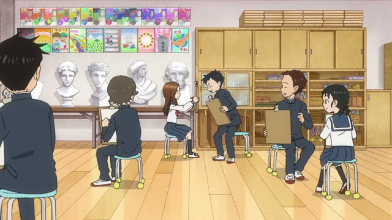
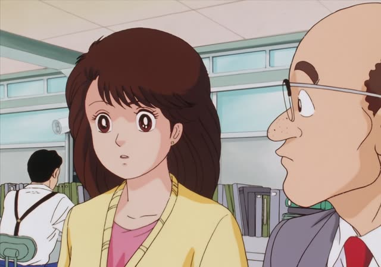
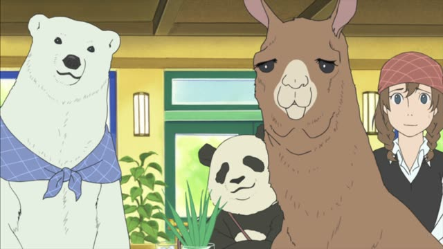
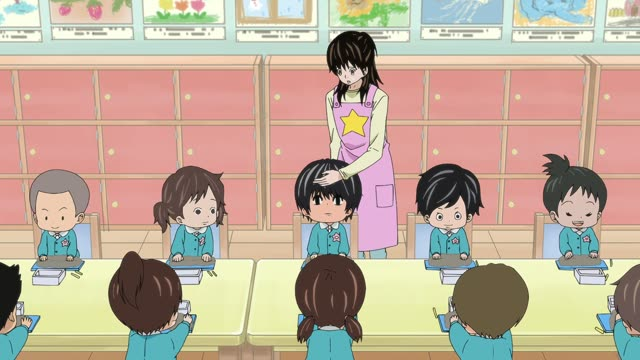
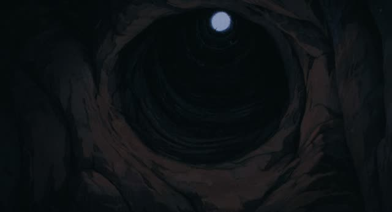
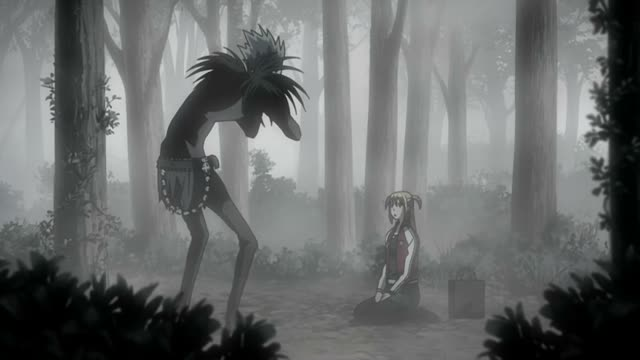

こんなに・そんなに・あんなに
Legal High · Season 2, Episode 7
人はそんなに強くありませんよ。
"People aren't that strong."
こんなに, そんなに and あんなに mean "this much" or "that much". They go right before an adjective or a verb and say how much: そんなに強い, "that strong". Most of the time they come with a negative: そんなに～ない = "not that ~".
Same split as この・その・あの: こんなに is what's right here with me, そんなに is what you just said (or what's on your side), あんなに is something far away or in the past that we both know.
On this card, a lawyer talks to a mentor who trained people very hard and expected them to hold up. She says people aren't that strong. The polite negative 強くありません makes the sentence polite.

Teasing Master Takagi-san · Season 1, Episode 11
そんなに顔赤くないから！
"My face isn't that red!"
On this card, Takagi teases Nishikata about his red face. He doesn't say "it's not red", he says it's not that red: そんなに, because it's about what she just said.
Quick Examples
A friend asks if the new ramen place is pricey.
ううん、そんなに高くないよ。
"Nah, it's not that expensive."
Your friend brought up the price: そんなに.
CasualAfter the exam, your teacher asks how it went.
そんなに難しくありませんでした。
"It wasn't that hard."
Negative again: the usual way you'll hear it.
PoliteYou look out the window at a street buried in snow.
こんなに雪が降ったのは初めてです。
"It's the first time it's snowed this much."
The snow is right in front of you: こんなに.
PoliteYou and a friend look up at a tower far away.
あんなに高いビル、初めて見た。
"I've never seen a building that tall."
Far from both of you: あんなに.
CasualWith and without
この店は高くないです。
"This shop isn't expensive." It's cheap, full stop.
この店はそんなに高くないです。
"This shop isn't that expensive." A bit pricey maybe, but not much.
このかばん、重い！
"This bag is heavy!"
このかばん、こんなに重いの？
"This bag is this heavy?" You're surprised by how much.
Examples from Media

Oishinbo · Episode 53
そんなに高いんですか？
"Is it that expensive?"
He just said the shop is the priciest in Japan: そんなに.
Kekkon Dekinai Otoko · Episode 7
こんなには食べられません。
"I can't eat this many."
The box of meat buns is in his hands: こんなに. The は adds "not this many (maybe one)".

Shirokuma Cafe · Episode 31
そんなに甘くないですよね。
"Things aren't that easy, are they."
甘い here means "easy, soft". そんなに～ない: not that easy.
Sakamoto Days · Episode 8
そんなに強いんですか？
"Are they that strong?"
Sakamoto just warned him about them: そんなに.

Kotaro Lives Alone · Episode 7
ほら、おでここんなに熱いよ。
"See, your forehead is this hot."
Her hand is on his forehead, right here: こんなに.

Castle in the Sky
入り口があんなに小さいや。
"The entrance looks so small."
The entrance is way up there, far away: あんなに.

Death Note · Episode 24
そんなにおいしい？
"Are they that good?"
Ryuk is munching the apples he was brought: そんなに, about what he's doing.
Howl's Moving Castle
重い…何でこんなに重いのよ…
"Heavy... why is it so heavy..."
She's carrying the weight herself: こんなに.